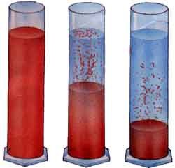
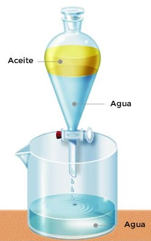
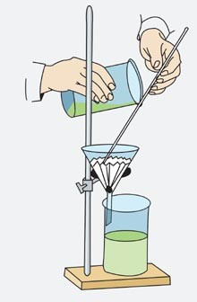

Separación de Mezclas
A continuación, para seguir en el tema, podes repasar un poco más y abrir los siguientes videos:
Soluciones
Solubilidad
Cliqueando sobre el siguiente link SOLUCIONES y SOLUBILIDAD de EDUCATINA
SEPARACION DE MEZCLAS
Los sistemas heterogéneos se pueden separas las fases por medio de diversos métodos. La elección del método a utilizar dependerá de las características de las sustancias y de sus estados de agregación.
Las fases que forman un sistema heterogéneo se pueden separar unas de otras utilizando procedimientos adecuados a cada caso:
• Cuando el sistema está formado por una fase líquida y otra sólida, como agua y arena, se lo deja cierto tiempo en reposo para que sedimente la arena y luego se separa el agua, trasvasándola con cuidado a otro recipiente o succionándola con pipeta.

En el caso de que se trate de dos líquidos no miscibles o inmiscibles, como agua y aceite, se utiliza una ampolla de decantación. Se coloca el sistema dentro de la ampolla y se lo deja en reposo hasta que se separen los líquidos (el agua ocupa la parte inferior, por ser más densa). Luego, al abrirla llave se deja salir el agua, debiendo cerrarse el paso cuando está por pasar el aceite. Esta operación que permite separar sistemas sólido-líquido o líquido-líquido de diferente densidad, se denomina decantación.

• Algunos sistemas están formados por una fase líquida en cuyo interior hay partículas sólidas en suspensión, como por ejemplo el agua turbia de un charco. En este caso se puede proceder de dos modos distintos:
a) Se hace pasar el sistema líquido-sólido a través de una superficie porosa, llamada filtro, generalmente colocada dentro de un embudo. Las partículas sólidas son retenidas por el filtro porque tienen un diámetro mayor que los poros. Como filtr o es muy utilizado un papel poroso, denominado papel de filtro, aunque también se utilizan arena, algodón, polvo de carbón, telas especiales, lana de vidrio, porcelana, amianto, etcétera. Este procedimiento se llama filtración.

b) En otras ocasiones, primero se precipitan las partículas sólidas y luego se hace una decantación.
Para acelerar la sedimentación de dichas partículas se las somete a la acción de la fuerza centrífuga: el sistema se coloca en tubos cónicos que giran a gran velocidad dentro de aparatos llamados centrífugas, lo cual determina que las partículas, por ser más densas, precipiten, ocupando el fondo de dichos recipientes. Este procedimiento recibe el nombre de centrifugación.
Una vez lograda la separación de las fases, se realiza la decantación del líquido.
• En el caso de sistemas cuyas fases son sólidas, se opera de diferentes modos, según las características que presenten:
a) Si las partículas que forman cada fase sólida tienen diferente tamaño, se coloca el sistema material sobre una malla de metal o plástico (tamiz), se sacude y entonces las partículas de menor diámetro atraviesan la malla, mientras que las de mayor tamaño quedan retenidas. El procedimiento se llama tamización y como ejemplo se puede señalar la separación del canto rodado, de la arena.

b) Cuando los sólidos tienen diferente densidad, tal como una mezcla de arena y corcho, se agrega un líquido que tenga una densidad intermedia con respecto a ellos, como el agua. El corcho flota y la arena se deposita en el fondo. Este método se denomina flotación.
c) En el caso de que una de las fases sea soluble en un determinado solvente y la otra no, como ocurre en la mezcla de arena y sal, se agrega agua, se agita para asegurarla disolución de la sal, y se procede a filtrar, separando la arena del agua salada. Este procedimiento se denomina disolución.
Luego, por evaporación se separa la sal del agua.
d) Si los sólidos tienen diferente densidad, como la arena y el oro, se hace circular una corriente de agua que arrastra la mezcla a través de canales; entonces, las pepitas metálicas (más densas) sedimentan, mientras que la arena se mantiene en suspensión. Esta forma de separación de fases recibe el nombre de levigación.
e) Cuando uno de los sólidos está compuesto por hierro, se puede separar de la mezcla acercándole un imán. Este método se llama separación magnética. Así, en el proceso de fabricación de la harina, una de las operaciones previas consiste en apartar de los granos de trigo pequeños trozos metálicos (clavos, alambres, etc.), haciéndolos pasar por un campo magnético.
Todos los procedimientos antes mencionados, también se denominan métodos separativos.
Como se observa en los ejemplos, los métodos separativos que se utilizan varían de un caso a otro, según las propiedades de las fases que forman el sistema, como por ejemplo el tamaño de las partículas, su densidad, la solubilidad, etcétera.
En un sistema heterogéneo, cada una de las fases que lo integran, después de ser separadas constituyen sistemas homogéneos.
Obra publicada con Licencia Creative Commons Reconocimiento Compartir igual 4.0